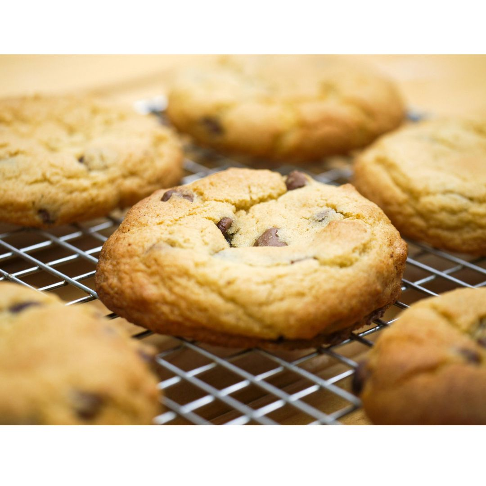

Home
Chocolate Chip Cookies

Freshly Home Baked Chocalate Chip Cookies from Scratch
These classic chocolate chip cookies are everything a cookie should be—golden and crisp
on the outside, soft and chewy in the center, and loaded with melty chocolate chips in
every bite. Fresh out of the oven, they have a warm, buttery aroma that instantly fills
your kitchen and your heart. Whether you're baking for a cozy night in, a crowd-pleasing
treat, or just a well-deserved moment of indulgence, this recipe delivers cookies that
are thick, soft, and undeniably addictive. One bite, and you'll never go back to
store-bought again. This recipe makes about 5 dozen cookies at about 2 1/4 inch each.
Ingredients
- 2 1/4 cup all purpose flour
- 1 teaspoon baking soda
- 1 teaspoon salt
- 1 cup or 2 sticks butter, softened
- 3/4 cup sugar
- 3/4 cup firmly packed brown sugar
- 1 teaspoon vanilla
- 2 eggs
- 1 bag of chocolate chips
Steps
- Preheat the oven to 375F.
- Mix the flour, baking soda, and salt in a small bowl.
- In a large bowl, beat the softened butter, sugar, brown sugar, and vanilla unil creamy.
Then beat in the eggs.
- Gradually add flour mixture and stir in the chocolate chips.
- Drop rounded tablespoonfuls of cookie dough onto ungreased cookie sheets.
- Bake for 9-11 minutes looking for browning on the edges.